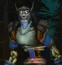

Sâarghâan
Age : 30 ans
Sexe : Homme
Race : Mort-vivant
Faction : Horde
Formation : Guerrier
Description : Je suis Sâarghâan, fils d'Aëlnur un guerrier humain et de Varindia une elfe d'Ashenvale.
Semi-Homme de naissance j'ai voué ma vie à explorer les recoins de notre monde, préférant la solitude des grands espaces à la vie communautaire, ma prime jeunesse fut voué au combat mon père étant soldat c'est tout naturellement que je fut élevé dans cette voie, mais même cela ne m'enleva pas de la tête l'envie de voyager et de découvrir plus en avant l'immensité de ces terres qui s'offraient à moi.
Combattant sans prétention mais valeureux je pensais être en mesure de parcourir les royaumes, seul, je partis donc dans le tumulte des guerres naissantes pour assouvir ma curiosité.
Mais je déchanta rapidement après quelques années de voyage je fut contraint de trouver des compagnons de route, les guerres étaient monnaie courante et blessé à plusieurs reprises je dut donc me raviser. Je trouva donc 4 compagnons prêts à me suivre et sans attendre, je m'engagea à nouveaux sur les dangereux chemins qui relient nos royaumes.
Mes pas me conduisirent le plus loin possible de mon village de naissance, d'Orgrimmar en Arathi, des Moulins de Tarren jusqu'à Baie du butin. Pour enfin faire une halte en Ashenvale ou je pensais retrouver un membre de ma famille du côté de ma mère qui habitait aux limites de la grande forêt. Elle était une elfe d'une grande beauté et d'une âme pure et sensible, contrairement à d'autre elle ne m'avais jamais rejeter de par ma nature mi-humaine, mi-elfique.
Mais hélas en arrivant j'appris que ma Tante Hékate avait disparut depuis fort longtemps et que nul ne savait ou elle se trouvait tant et si bien qu'ils leur paraissaient évident qu'elle était morte.
Ma peine fut grande et je décidais donc de partir quand même sur ses traces, réfutant sa disparition et rassemblant les quelques informations je parvint à tracer un itinéraire plausible qu'elle avait sûrement empruntéou pas.
Je me sépara de mes compagnons après une halte non loin du trépas d'Orgrim, nous avions subit une attaque sans commune mesure ou l'un d'entre nous avait périt et mes trois autres compères ne voulaient pas subir le même sort. Après une longue soirée d'adieu je repartis sur les routes comme à mes débuts, seul
J'erra par tous les temps continuant inlassablement mes vaines recherches, mais par une nuit froide et sombre perdu en Désolace, à moitié mort de faim j'abandonna ma quête, ma tante avait probablement subit un sort tout aussi peu enviable au mien. Je m'endormis une dernière fois pour ne plus jamais me réveiller
Curieusement mes yeux s'ouvrirent à nouveaux, alors que j'avais senti la mort s'emparer de mon âme je sentais à présent une force nouvelle en moi. Je n'étais plus à Désolace mais au village du Glas non loin des ruines de Lordaeron.
Une voix me sortit de ma torpeur, non je ne rêvais pas c'était bel et bien cette chère Hékate.
Mon corps me faisait souffrir, j'étais comme « raide », noueux, en tentant de me relever mes os craquèrent, alors que ma vision s'améliorait, je compris ce que j'étais devenu.
Ma tante me narra les derniers évènements de ma vie, mes compagnons de voyage pris de remords avaient tout fait pour me retrouver, ils avaient découvert mon corps sans vie dans cette petite montagne de Désolace près du cimetière des Koddos et l'avait rapatrié jusque dans les clairières de Tirisfall, pour le mettre en terre près du Glas.
Les années passèrent et passèrent encore avant qu'Hékate ne me retrouve pour accomplir la volonté de la Dame noire en assistant à ma renaissance.
Après d'interminables discussions sur le devenir de ce monde que je chérissais tant dans ma vie d'homme, elle m'apprit deux ou trois choses sur ma nature actuelle et me vint en aide à mes débuts pour me permettre de m'affirmer comme réprouvé.
Après quelques jours elle me confia à l'une de mes cousines Héra qui prit à sa charge de m'apprendre les dernières choses nécessaires à ma non-vie. Sous sa tutelle je m'affirmais enfin pour la gloire de la Horde.
Cycles après cycles je continue dans la voie qu'elles m'ont enseigné, comme elle l'ont fait pour moi j'uvre souvent à venir en aide aux plus « jeunes » que moi même si cela ne m'apporte rien d'autre que de la compagnie pour mes longs voyages.
Depuis ce temps je suis retourné à Désolace voir cette colline, voir le lieu de ma mort, et cette fois j'ai survécu et plus encore je suis aller au-delà de cette maudite contrée, la dame noire m'a donné la possibilité de parcourir encore et encore ce monde, assouvissant chaque jour mon envie d'aller toujours plus loin et pour cela j'uvrerai pour elle éternellement
Plus d'infos sur Sâarghâan >>>